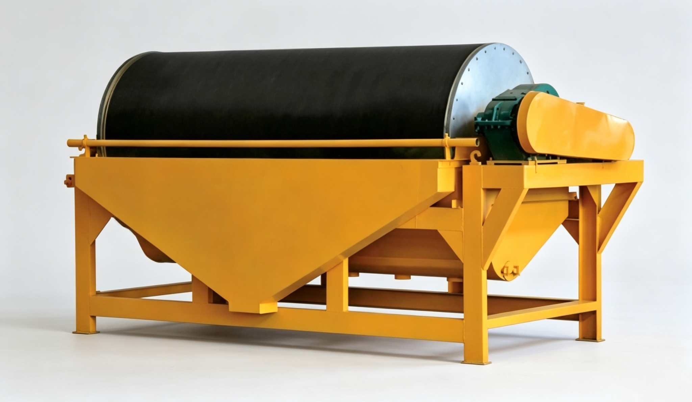

Wet semi-countercurrent permanent magnetic drum separator, using NdFeB rare earth magnets combined with ferrite magnetic system, high magnetic intensity, large penetration depth. Suitable for wet roughing and cleaning of fine strongly magnetic minerals, including hematite, magnetite, manganese ore, chromite and non-metal iron removal. Grade typically improves 10%-30% after separation.

CTB Series wet permanent magnetic drum separator is designed for fine strongly magnetic minerals with semi-countercurrent type. The magnetic system uses high-performance NdFeB rare earth magnets combined with ferrite, drum surface magnetic intensity 1200-6000 GS (120-600 mT), large penetration depth,resistant to demagnetization. Semi-countercurrent tank design — pulp enters the separation space from below in loose suspension, particle movement direction aligns with magnetic force direction, fully contacting the high magnetic field zone for higher concentrate quality and metal recovery. 12 models available, drum diameter φ600-1500mm, capacity (dry ore) 10-280 t/h.
Pulp enters the separation space from below the tank in loose suspension, with particles uniformly dispersed. The semi-countercurrent feed direction aligns with magnetic field lines, allowing particles to fully approach the strongest magnetic zone on the drum surface.
Magnetic particles are attracted to the stainless steel drum surface under strong magnetic force. Non-magnetic or weakly magnetic particles are unaffected and discharge through the bottom tailings port under gravity and water flow.
The drum rotates the adsorbed magnetic concentrate to the weak magnetic zone at the magnetic system edge, where the water spray washes concentrate into the chute. Fixed magnetic system + rotating drum enables automated continuous feeding and discharging.
| Model | Drum Dia (mm) | Drum Length (mm) | Speed (r/min) | Magnetic Intensity (GS) | Feed Size (mm) | Feed Density | Working Gap (mm) | Dry Ore (t/h) | Pulp (m³/h) | Motor (kW) | Weight (kg) | Dimensions (mm) |
|---|---|---|---|---|---|---|---|---|---|---|---|---|
| CTB612 | 600 | 1200 | 35 | 1200-6000 | ≤0.4 | 20-25% | 30-40 | 10-15 | — | 2.2 | 1200 | 2280×1300×1250 |
| CTB618 | 600 | 1800 | 35 | 1200-6000 | ≤0.4 | 20-25% | 30-40 | 15-20 | — | 2.2 | 1500 | 2880×1300×1250 |
| CTB7512 | 750 | 1200 | 35 | 1200-6000 | ≤0.5 | 20-25% | 30-40 | 15-20 | — | 2.2 | 1830 | 2256×1965×1500 |
| CTB7518 | 750 | 1800 | 35 | 1200-6000 | ≤0.5 | 20-25% | 30-40 | 30-35 | — | 3.0 | 2045 | 2880×1965×1500 |
| CTB918 | 900 | 1800 | 31 | 1200-6000 | ≤0.8 | 25-35% | 45-75 | 35-50 | 100-150 | 4.0 | 3500 | 3000×1500×1500 |
| CTB924 | 900 | 2400 | 31 | 1200-6000 | ≤0.8 | 25-35% | 45-75 | 40-60 | 120-180 | 4.0 | 4000 | 3600×1500×1500 |
| CTB1018 | 1050 | 1800 | 25 | 1200-6000 | ≤0.8 | 25-35% | 45-75 | 50-100 | 170-200 | 4.0 | 4095 | 3440×2220×1830 |
| CTB1024 | 1050 | 2400 | 25 | 1200-6000 | ≤0.8 | 25-35% | 45-75 | 70-130 | 200-300 | 5.5 | 5071 | 3976×2250×1830 |
| CTB1030 | 1050 | 3000 | 25 | 1200-6000 | ≤0.8 | 25-35% | 45-75 | 80-140 | 220-320 | 5.5 | 5671 | 4600×2250×1830 |
| CTB1224 | 1200 | 2400 | 20 | 1200-6000 | ≤0.8 | 25-35% | 45-75 | 90-150 | 230-330 | 7.5 | 5780 | 4100×2400×1980 |
| CTB1230 | 1200 | 3000 | 20 | 1200-6000 | ≤0.8 | 25-35% | 45-75 | 100-180 | 250-350 | 7.5 | 6010 | 4700×2400×1980 |
| CTB1530 | 1500 | 3000 | 14 | 1200-6000 | ≤0.8 | 25-35% | 45-75 | 170-280 | 270-390 | 11.0 | 6950 | 4900×2700×2400 |
※ CTB is semi-countercurrent type. CTS (concurrent) and CTN (countercurrent) tank types available for customization. Technical data subject to change without notice.
| Component | Function | Material / Features |
|---|---|---|
| Permanent Magnetic Drum | 2-3mm stainless steel plate rolled and welded into drum, cast aluminum end covers connected via stainless steel screws. Rotates to carry adsorbed magnetic particles out of liquid to discharge zone | Non-magnetic stainless steel (304/316L) |
| Composite Magnetic System (Yoke + Magnets) | Core separation component, fixed inside the drum. NdFeB rare earth + ferrite magnets alternately arranged, poles alternating circumferentially and consistent axially. Multi-pole large wrap angle (128°-168°) extends the separation zone | NdFeB + ferrite composite magnets |
| Tank | Semi-countercurrent type — pulp fed from bottom moving upward, tailings discharged from bottom port. Non-magnetic materials used near magnetic system to avoid magnetic short circuit | Non-magnetic stainless steel + Q235 steel plate |
| Drive Device | Motor drives drum and magnetic roller via reducer (or stepless speed motor), speed 14-35 r/min | Y Series motor + reducer |
| Feed Box | Uniformly feeds pulp to tank bottom, maintaining stable concentration and flow, ensuring full particle dispersion in separation chamber | Stainless steel / wear-resistant steel |
| Discharge Water Pipe | Installed at weak magnetic zone at magnetic system edge, sprays water to wash concentrate from drum surface into chute | Stainless steel pipe + multi-hole nozzle |
| Frame | Carries all components, supports drum, tank and drive, ensuring stable overall operation | Standard steel section welded frame |
CTB wet magnetic separator is suitable for wet separation of the following strongly and moderately magnetic minerals, also applicable for non-metal iron removal. Grade typically improves 10%-30% after separation.
After one pass through CTB wet magnetic separator, magnetic mineral grade improves 10%-30%. Multiple units in series can further improve concentrate grade to high-grade product standards.
NdFeB rare earth magnets combined with ferrite form multi-pole large wrap-angle system (128°-168°), magnetic intensity 1200-6000 GS, large penetration depth,resistant to demagnetization, service life over 10 years.
Pulp fed from tank bottom, movement direction consistent with magnetic field lines, particles fully contact the strongest magnetic zone. Compared to traditional concurrent/countercurrent types, both grade and recovery rate are significantly improved.
The same drum can be fitted with three tank types: semi-countercurrent (CTB, ≤0.5mm), concurrent (CTS, 6-0mm) and countercurrent (CTN, 0.6-0mm), flexibly adapting to different particle size ranges and beneficiation process requirements.
Large drum diameter (φ1500mm) and long drum (3000mm) design, CTB1530 dry ore capacity up to 280 t/h. Low unit energy consumption, comprehensive operating cost far lower than electromagnetic high-intensity magnetic separators.
Fixed magnetic system + rotating drum enables continuous feeding and discharging without manual intervention. Adjustable magnetic declination angle allows parameter optimization for different feed concentrations within 10 minutes. Maintenance requires only periodic oil lubrication.
Roughing and cleaning of magnetite, hematite, limonite and goethite. CTB1018-1230 works with ball mill closed-circuit grinding-classification-magnetic separation flow, throughput 50-180 t/h. CTB1530 is used for primary magnetic separation in large iron ore plants, single unit reaches 280 t/h.
Psilomelane, pyrolusite, rhodochrosite and chromite are all weak to medium magnetic minerals. CTB magnetic separator combined with high-intensity magnetic or gravity separation can effectively discard gangue, upgrading manganese/chromium grade by 15%-25%.
Monazite, molybdotantalite, titanoniobite, wolframite, ferrotitanium rutile etc. after gravity pre-enrichment, the CTB magnetic separator separates magnetic from non-magnetic minerals, simplifying subsequent flotation or electrostatic separation processes.
Iron impurities in non-metallic minerals such as quartz sand, feldspar, kaolin and mica affect whiteness and quality. CTB wet magnetic separator efficiently removes mechanical iron and weakly magnetic iron oxides, meeting raw material standards for glass, ceramic and other industries.
Interested in Magnetic Separator? Contact us for iron ore wet magnetic separation or non-metal iron removal process